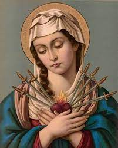

Dogmas de Maria
dogmas são paraos católicos verdades de fé

Os 4 Dogmas de Maria
Mãe de Deus
Mãe de Deus
Assunta oas Céus
Assunta oas Céus
Virgindade Perpétua
Sempre Virgem
Imaculada Conceição
Imaculada
links das fontes
MUNIFICENTISSIMUS DEUS
CATECISMO DA IGREJA CATÓLICA
PDF do catecismo
catecismo PDF